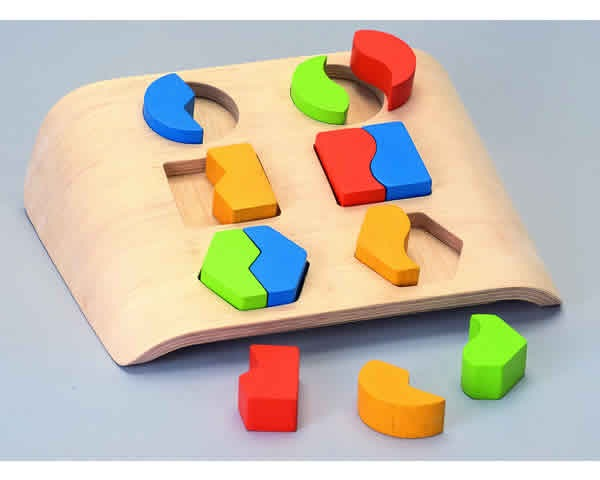

Regular expressions
Perl curs 10/11/2012
By @freekey

Pattern matching
Literales / Substring patterns
my $string = 'Hola mundo!';
say "Es un saludo." if $string =~ /Hola/;
Match operator
// m// Regex binding operator
=~ !~ Combinaciones y qr// operator
my $string = "Hola que tal!?";
my $regex = qr/Hola/;
say "Es otro saludo!" if $string =~ /$regex/;
my $more = qr/que tal/;
say "Es este saludo!" if $string =~ /$regex $more/;
Cuantificadores
+
*
?
{3}
{3,}
{3,6}
+
Una o mas veces
"Hola que tal" =~ /Ho+la/;
"Hoooola!!!" =~ /Ho+la/;
"Hooooooooooola" =~ /Ho+la/;
# false
"Hla" =~ /Ho+la/;
*
Cero o mas veces
"Hola que tal" =~ /Ho*la/;
"Hoooola!!!" =~ /Ho*la/;
"Hooooooooooola" =~ /Ho*la/;
# verdadero
"Hla" =~ /Ho*la/;
?
Cero o una vez
"Hola que tal" =~ /Ho?la/;
# verdadero
"Hla" =~ /Ho?la/;
{min,max}
Número controlado de veces
"Hola que tal" =~ /Ho{1}la/;
"Hoooola!!!" =~ /Ho{3}la/;
"Hooooooooooola" =~ /Ho{3,}la/;
"Hooooooooooola" =~ /Ho{3,11}la/;
# * es igual a {0,}
# + es igual a {1,}
Anchors
\A \Z
"Hola\nque tal" =~ /\Aque tal\Z/;
^ $
"Hola que tal" =~ /^hola que tal$/;
\b
"Hola que tal" =~ /\bque\b/;
# false
"Nos quedamos" =~ /que\b/;
Metacaracteres
. (lo que sea)
"cualquier cosa que pongamos le mola" =~ /.*/;
- \d \D
- \w \W
- \s \S
Character classes
[]
Character classes
\d
qr/[123456789]/
qr/[1-9]/
\D
qr/[^1-9]/
Character classes
\w
qr/[a-zA-Z0-9_]/
\W
qr/[^a-zA-Z0-9_]/
Character classes
\s
qr/[ ]/ # y varios espacios mas unicode!
\S
qr/[^\s]/ # :-)
Capturas
()
Capturas por posición
my $str = "3 tristes tigres en 1 trigal con 1 copa en la mano";
if ( $str =~ /\d(.+)\d/ ) {
say $1; # ???
}
Capturas por posición
my $str = "3 tristes tigres en 1 trigal con 1 copa en la mano";
if ( $str =~ /\d\s*(.+)\s*\d/ ) {
say $1; # "tristes tigres en 1 trigal con"
}
Greedy vs Lazy
Los cuantificadores + y * son avariciosos...
? al rescate!
my $str = "3 tristes tigres en 1 trigal con 1 copa en la mano";
if ( $str =~ /\d\s*(.+?)\s*\d/ ) {
say $1; # "tristes tigres en"
}
Capturas por nombre
%+
my $str = "3 tristes tigres en 1 trigal con 1 copa en la mano";
if ( $str =~ /\d\s*(?.+?)\s*\d/ ) {
say $+{quienes}; # "tristes tigres en"
}
Un caso práctico...
my $str = 'Mi dirección de correo es diego@freekeylabs.com';
my $email = qr/\w+@\S+/;
if ( $str =~ /(?$email)/ ) {
say "Mi email es: $+{email}";
}
Grupos y alternancia
my $str = 'Mi dirección de correo es diego@freekeylabs.com';
my $str2 = "Mi teléfono es 666-909-456";
my $email = qr/\w+@\S+/;
my $phone = qr/\b\d{3}-\d{3}-\d{3}\b/;
if ( $str =~ /(?:(?$email)|(?$phone))/ ) {
if ( $+{mail} ) {
say "El email es: $+{email}";
}
else {
say "El teléfono es: $+{tel}";
}
}
Secuencias de escape
- \
- \Q
- \E
- la funcion quotemeta()
\ (escapar)
'diego@freekeylabs.com' =~ /\w+@(?:\w+\.)+\w+/;
quotemeta()
my $string = "...";
"interpolado" =~ /$string/; # match!
my $q_string = quotemeta($string);
"interpolado" =~ /$q_string/; # not match!
\Q y \E
'como quotemeta()' =~ /\Q$string\E/; # not match!
Modificadores
$string =~ /(
\w+@\S+ # pillo un email
| # o
\b\d{3}-\d{3}-\d{3}\b # pillo un teléfono
)/x;
'Hola que tal!?' =~ /hola/i; # case insensitive
Contexto de lista vs scalar
(y el modificador /g)
my $phone = qr/\b\d{3}-\d{3}-\d{3}\b/;
my $string = 'Casa: 939-098-342 | Movil: 632-090-345';
say "got a phone!" if $string =~ /$phone/; # scalar context
my ( $first_phone ) = $string =~ /$phone/;
my @all_phones = $string =~ /$phone/g;
substituciones
my $phone = qr/\b\d{3}-\d{3}-\d{3}\b/;
my $string = 'Casa: 939-098-342 | Movil: 632-090-345';
$string =~ s/$phone/(hidden data)/g;
say $string; # "Casa: (hidden data) | Movil: (hidden data)";
split()
my @words = split /\s+/, "habia una vez una palabra";